Mainradweg von Kulmbach bis Mainz und dann auf dem Rheinradweg bis Duisburg
Vorbereitung
Dieses Jahr stand mal wieder eine mehrtägige Radtour auf dem Programm.
Der Mainradweg soll ja ganz nett sein. Also fix den GPS Track von der
offiziellen Homepage heruntergeladen. Mainz soll aber nicht Ziel der
Reise werden. Dort trifft der Main auf den Rhein, und das Rheintal ist ja
ganz nett anzusehen. Als Endpunkt hatten wir dann Duisburg ausgewählt.
Dank des Deutschlandtickets schien die Anreise nach Kulmbach per Bahn
mit vier Personen und vier Fahrrädern plus Gepäck wegen der
überfüllten Züge illusorisch. Der Fernverkehr
hatte leider am gewünschten Termin auch keine Fahrradstellplätze
mehr frei.
Also planten wir mit dem Auto nach Kulmbach zu fahren, und dieses dort
für den Zeitraum unserer Tour abzustellen. Später wollten wir dann per Nahverkehr nach Kulmbach fahren, um das Auto wieder abzuholen.
Ansonsten kam wieder unser Bergans Tipi mit. Für die erste Nacht buchten
wir aber ein Hotel in Kulmbach.
08.08.2023 - 73km - Kulmbach - Rattelsdorf
Schwanen Bräu ist echt süffig
Nach dem Hotelfrühstück sind wir zum Startpunkt am Langzeitparkplatz
am Schwedensteg gefahren und haben die Räder aufgerödelt.
In Kulmbach gab es einige Baustellen und Sperrungen des Radweges, so dass
wir erst mal frei Schnauze gefahren sind. Hinter Kulmbach sind wir dann
auf den offiziellen Radweg getroffen.
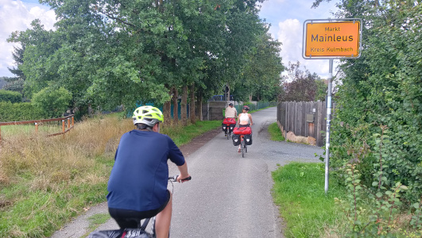
Kurz hinter Kulmbach
Vom Main ist noch nicht viel zu sehen, und der Weg hat auch mehr
Höhenmeter als erwartet. Am schlimmsten hat uns aber der Gegenwind
getroffen. Zumindest versprach der Wind einen Wetterwechsel, denn die
Tage vorher war es eher regnerisch und unbeständig.
In Lichtenfels gönnen wir uns jeder ein Eis und planen als
Tagesende den Campingplatz Ebing in Markt Rattelsdorf.
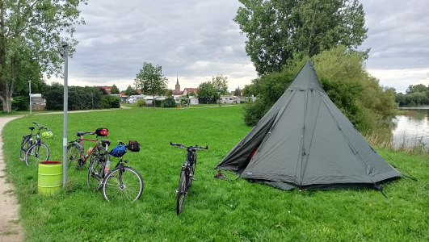
Unser netter Zeltplatz
Wie sich herausstellte, war es eine gute Wahl. Wir durften das Zelt direkt
am See aufbauen, die Waschräume sind sauber und im Ort gibt es die
Brauerei Schwanen-Bräu. Dort ist die Versorgung mit Speis und
Trank gesichert, und das Bier ist echt der Hammer. Zusätzlich hat der
Wirt alle unsere digitalen Endgeräte aufgeladen.
09.08.2023 - 87km - Rattelsdorf - Schweinfurt
Regen, Sonne und kein Bier in Bamberg
Seit 3 Uhr regnet es. Von 8 Uhr bis 10 Uhr gibt es eine Pause. Wir nutzen
die Lücke, um das Zelt abzubauen und bei einem nahen Bäcker in
einem Netto Supermarkt zu frühstücken.
Danach schüttet es. Wir packen uns in die Regenklamotten und fahren
einfach weiter. Vor Bamberg hört es dann aber auf. Wir verpassen
einen Wegweise und anstatt umzukehren, fahren wir einfach Richtung Bamberg
weiter.
Die Route zum Radweg führt uns leider auf eine
Schnellstraße. Mist! Also wieder zurück. Irgendwie finden
wir dann doch den Radweg wieder, und die Sonne ist inzwischen auch
wieder da.
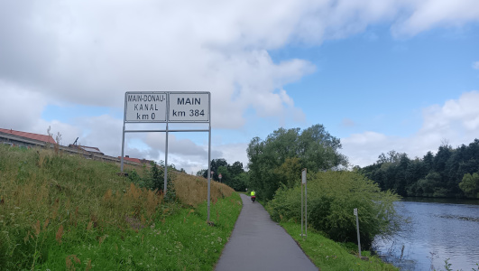
Main trifft Main-Donau-Kanal
Leider sehen wir immer noch wenig vom Main, und der Radweg führt gerne
mitten durch Ortschaften. Entsprechend langsam kommen wir voran.
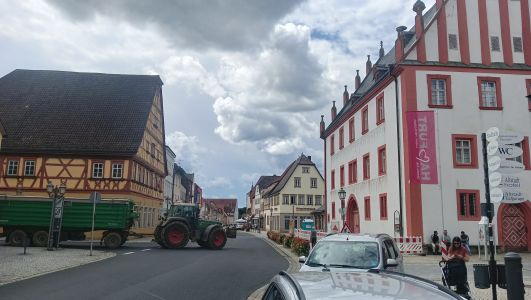
Immer wieder Ortsdurchfahrten
Der Campingplatz in Schweinfurt liegt etwas abseits des Radweges, und es geht
auch noch einen Berg hoch. Wir müssen uns erst mal wieder an Stadtverkehr
gewöhnen. Es handelt sich eher um einen Wohnmobilplatz, aber es
befindet sich dann doch noch ein weiteres Zelt auf der Wiese. Die Sanitärräme
sind so sauber, dass man sich kaum traut, sie zu betreten. Abends sind wir in ein nahe
gelegenes Restaurant gegangen.
10.08.2023 - 97km - Schweinfurt - Würzburg
Endlich das Gefühl von flussradeln
Wir müssen vom Campingplatz erst mal wieder durch die Stadt zum Fluss.
Bei Grafenrheinfeld fahren wir an der Atomkraftwerksruine vorbei. Wir
kommen nun langsam von der Bier- in die Weingegend.
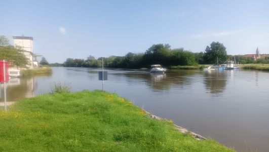
Fähre Wipfeld
In Wipfeld bringt uns eine Fähre auf die andere Mainseite.
In der Vinothek Weinreich in Sommerach gönnen wir uns jeweils ein Glas Weißwein.
Die Kinder bekommen natürlich Traubensaft.
Der Wein erleichtert das Radfahren mit Gepäck nicht unbedingt.
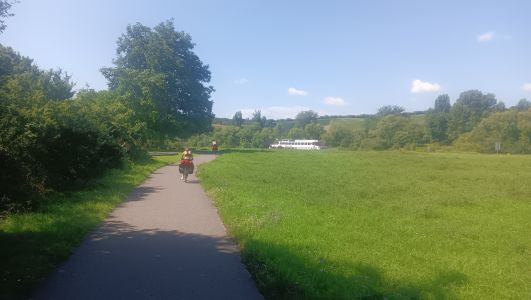
Ausflugsdampfer fahren durch die Wiese
Mittlerweile ist es richtig sonnig und heiß geworden. Wir entscheiden
uns gemeinsam, heute mal richtig Strecke zu machen und bis Würzburg zu
fahren. Dort gibt es einen Kanuverein, bei dem wir unser Zelt aufbauen dürfen.
Abends finden wir die kleine aber feine Pizzeria da Lele.
11.08.2023 - 63km - Würzburg - Lohr
Camping und Freibad
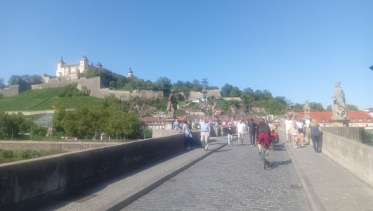
Würzburg
Heute ist es sehr heiß, und wir planen nur eine kurze Etappe.
Der Radweg liegt größtenteils im Schatten. Er führt dann aber
später oft wieder direkt durch die Orte, was etwas aufhält.
In Karlstadt wechseln von von der linken auf die rechte Mainseite, um
dann in Gemünden wieder zurück zu wechseln.
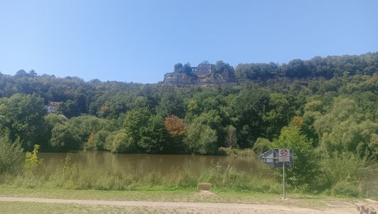
Mainruine
Unser Ziel ist der Campingplatz Mainufer neben dem Freibad in Lohr. In der
Campinggebühr ist der Freibadbesuch eingeschlossen. Ein lohnenswerter
Tagesabschluss. Leider erschwert ein feiernder Dauercamper von nebenan, der
uns tagsüber schon durch intensives Rasen mähen aufgefallen war,
die Nachtruhe.
12.08.2023 - 49km - Lohr - Wertheim
Gewitterbedingte Kurzetappe
Für heute sind Gewitter angekündigt. Wir rollen locker am Main
entlang. Der Radweg ist langsam so, wie wir ihn uns vorgestellt
hatten.
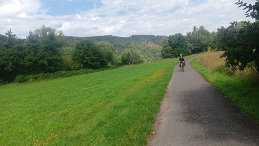
Fluß, Radweg und Ruhe
Es ist wieder sehr heiß, und wir planen erneut nur eine kurze Etappe. In Wertheim
in der Eisdiele weist uns die Bedienung auf die dunklen Wolken hin und mahnt uns, uns rechtzeitig einen geeigneten Unterschlupf zu suchen.
Wir wählen den Campingplatz in Wertheim aus. Als
die Rezeption um 14 Uhr aufmacht, fängt es an zu regnen.
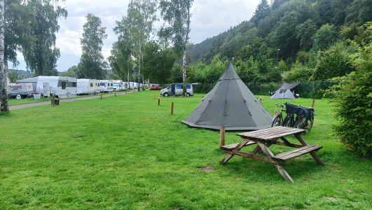
Campingplatz in Wertheim
Das Zelt bauen wir im Gewitter auf und schmeißen das Gepäck hinein.
Das Gewitter lässt irgendwann nach, und neben dem Zelt steht eine Bank.
Heute kochen wir also mal selber.
13.08.2023 - km - Wertheim - Mainflingen
Camping am Langwellensender
Da wir gestern früh im Zelt waren, sind wir heute auch früh wach.
Um 8:50 Uhr sitzen wir schon wieder auf dem Rad. In Wertheim-Bestenheid wechseln
wir wieder auf die rechte Mainseite, um wieder zum Radweg zu kommen. Die
Wolken hängen noch tief, aber das Wetter klart auf, und es wird wieder
heiß.
Wir fahren durch wunderschöne Landschaft und machen in Miltenberg Mittagspause.
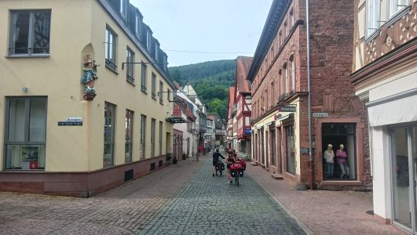
Altstadt von Miltenberg
Kurz vor Aschaffenburg treffen wir auf eine nette Radfahrerin, die uns
durch die Stadt lotst und auch Fremdenführerin spielt.
Da es sehr warm ist, verzichten wir auf die Stadt und fahren weiter am Main entlang
bis zum Seecamping Mainflingen. Der Platz liegt direkt an der DCF77
Sendeanlage, die dafür sorgt, dass in Deutschland alle Uhren gleich
ticken.
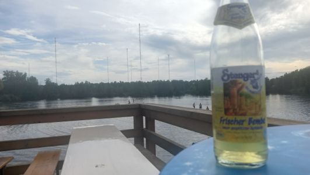
Camping neben der Senderanlage
Der Platz ist recht voll, aber die Nacht ist trotzdem ruhig.
14.08.2023 - 45km - Mainflingen - Frankfurt
Jugendherberge direkt am Main
Schon um 8:30 Uhr rollen wir vom Campingplatz. Heute wollen wir nur bis Frankfurt.
Wir haben eine Jugendherberge direkt am Mainufer gebucht. Es ist schwülwarm.
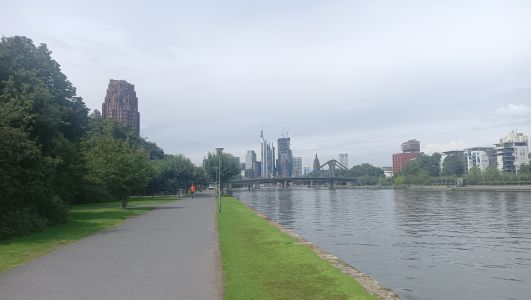
Frankfurt
Um 14 Uhr checken wir ein und gehen in die Stadt. Wir zeigen den Kinder die
Paulskirche und besorgen eine kleine Flasche Öl für unsere
mittlerweile rasselnden Fahrradketten.
Abends besuchen wir ein Restaurant direkt neben der Börse.
Am späten Abend bricht ein Unwetter über Frankfurt herein und es donnert fast die ganze Nacht. Wir sind froh, nicht im Zelt schlafen zu müssen, sondern ein festes Dach über dem Kopf zu haben.
15.08.2023 - 76 km - Frankfurt - Bingen
Wissenschaftsschiff in Mainz
Um 7:30 Uhr sind wir bereits im Frühstücksraum. Das Frühstück
ist gut. Wir verlassen Frankfurt und dann wird die Landschaft auch wieder ganz
nett. Im Sonnenschein rollen wir am Main entlang Richtung Mainz.
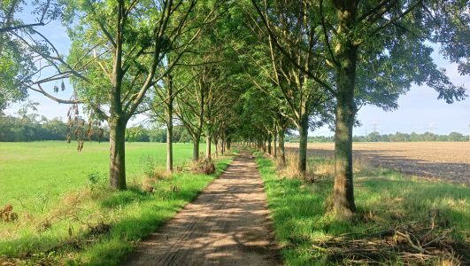
Zwischen Frankfurt und Mainz
Wir erreichen bei Kilometer 0 die Mündung des Mains in den Rhein.
In Mainz wollen wir eigentlich in eine Eisdiele. Leider können wir bei
zwei Eisdielen die Fahrräder nicht abstellen. Somit bleibt das Eis aus.
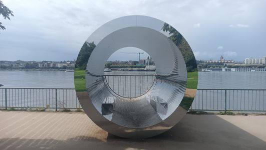
Main in Sicht
Am Rheinufer liegt die MS Wissenschaft. Ein zum Museum umgebautes Frachtschiff.
Es fängt an zu gewittern und heftig zu regnen, und wir verbringen das schlechte Wetter im Schiffsrumpf.
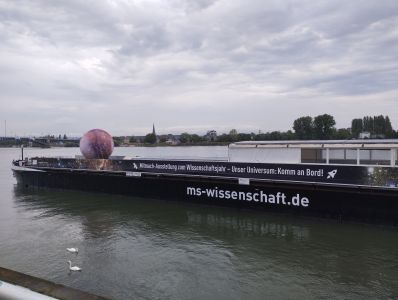
Die MS Wissenschaft
Um 14 Uhr fahren wir weiter durch den Mainzer Norden. Es gibt schönere
Ecken zum Radfahren. Bei einem Bäcker in einer Bauhaus Filiale warten wir bei
Kaffee und Kuchen einen weiteren Regenschauer ab.
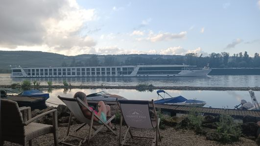
Rheinblick beim Campingplatz
Der weitere Weg ist teilweise unbefestigt, und wir und die Räder sehen
ziemlich eingesaut aus. In Bingen gehen wir auf den Campingplatz Bauer
Schorsch gegenüber von Rüdesheim.
16.08.2023 - 71km - Bingen - Lahnstein
Regen - Sonne - Regen
Wir verlassen den Platz und suchen uns den nächsten Bäcker.
Einen Regenschauer warten wir in einem Tunnel ab, langsam kommt aber die Sonne
wieder raus. An der Loreley machen wir einen Kaffeestopp.
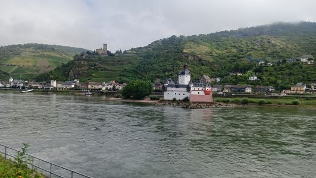
Burgen am Rhein
Der Radweg verläuft durchs enge Rheintal neben der Bundesstraße,
und wir kommen gut voran.
Wir fahren bis nach Lahnstein. Dort übernachten wir bei Freunden.
Das ist auch ganz gut so, denn Abends zieht wieder ein schweres Gewitter mit Starkregen und Sturmböen durch.
17.08.2023 - 67km - Lahnstein - Bonn
Camping unterm Siebengebirge
Von Lahnstein fahren wir nach Koblenz. Wir wuseln uns durch die Stadt zum
deutschen Eck.
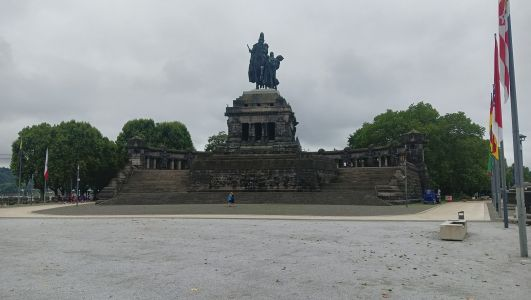
Deutsches Eck in Koblenz
Dann geht es weiter nach Andernach, und wir legen eine kurze Mittagsrast
in Linz ein.
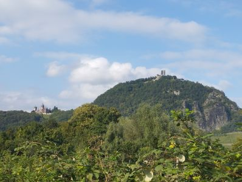
Der Drachenfels im Siebengebirge
Einen Platz für unser Zelt finden wir in Bonn-Mehlem direkt gegenüber
vom Drachenfels.
18.08.2023 - 116 km - Bonn - Düsseldorf
Durch Köln
Heute fahren wir weiter linksrheinisch am Rhein entlang und quälen uns durch
Wesseling, bevor wir Köln erreichen.
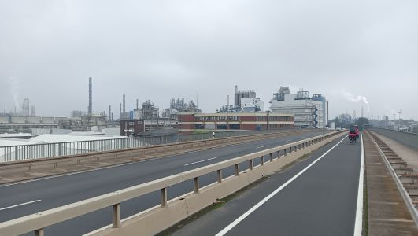
Durch Wesseling
Am Altermarkt genehmigen wir uns ein Eis und bewundern die Touristenfülle.
Im Norden von Köln wird es an den Fordwerken etwas
komplizierter, den Weg zu finden, und es fährt sich auch nicht
angenehm.
In Neuss entscheidet die Familie, nicht mehr dem Rhein mit seinen
Schleifen zu folgen, sondern direkt durch Neuss und am Neusser Hafen
vorbei den Campingplatz in Lörick anzusteuern. Keine gute Idee, wie sich herausstellt. Anstatt gemütlich am Rhein entlang zu fahren, geht es nun mit dem
Feierabendverkehr durch die Stadt.
Müde erreichen wir den Campingplatz. Er ist eigentlich voll.
Wir finden aber noch einen Platz, und die Rezeption meint, zur Not
müsse wegen Zeltcampern ein Wohnmobil den Platz verlassen.
Muskelmobilisten würden immer übernachten können.
18.08.2023 - km - Düsseldorf - Duisburg
Der kurze Weg zum Ziel
Es ist nun nicht mehr weit. Wir haben uns bei Freunden in Duisburg
angemeldet und erreichen unser Ziel zur Mittagszeit.
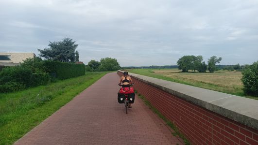
Zwischen Düsseldorf und Duisburg
Der Tag endet mit selbstgemachter Pizza, und alle sind froh, dass die Tour
zu Ende ist.
19.08.2023 - Duisburg - Kulmbach
Wir brauchen das Auto wieder
Da war noch etwas. Unser Auto steht noch in Kulmbach. Also wurde
ich früh morgens zum Duisburger Hauptbahnhof gebracht und
per Deutschlandticket ging es über Köln, Koblenz, Frankfurt,
Würzburg und Bamberg nach Kulmbach.
Wenige Stunden später war ich am Auto und nach mehreren
Stunden im Auto dann auch wieder in Duisburg.
Links:
Taste Hotel Kulmbach
Campingplatz Ebing
Stadtcamping Schweinfurt
Kanuclub Würzburg
Campingplatz Lohr am Main
Campingplatz Wertheim
Seecamping Mainflingen
Jugendherberge Frankfurt am Main
Campingplatz Bauer Schorsch Bingen
Campingplatz Genienau am Drachenfels
City Campingplatz Düsseldorf Lörick
|